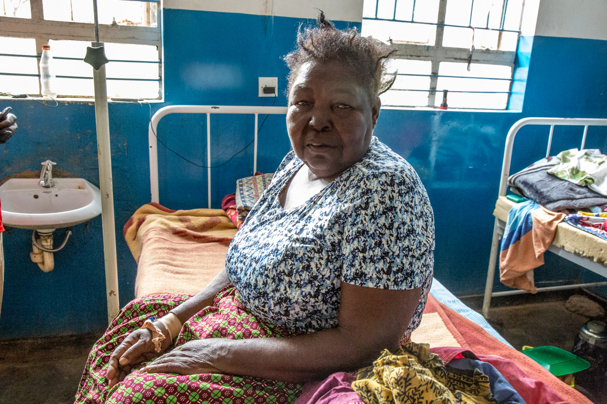

Smoke and Mirrors
Revealing Malawi's untold health and environmental crisis
Ingrid Gercama and Nathalie Bertrams for New Internationalist
Women all over the world risk their lives carrying out a mundane, necessary task every day: cooking food over open fire.
Every eight seconds, someone in the world dies because of the effects of inhaling fumes from open cooking fires or rudimentary stoves.
Cooking smoke or ‘household air pollution’ is linked to strokes, ischemic heart disease, chronic obstructive pulmonary disease and other ailments, and claims the lives of over 4.3 million people worldwide every year – more than malaria, tuberculosis and HIV/AIDS combined.

Almost half of the world population – roughly three billion people – cook on wood, charcoal, dung or coal, the highest polluting cooking fuels.
In poorly ventilated homes using these fuels, indoor smoke can be 100 times higher than acceptable levels for fine particles, with women and children being the most exposed to risk – as they breathe in thick smoke for hours while preparing meals.

‘Unclean’ cooking is causing a global health crisis that has gone largely unreported: factors including lack of data about the impact of cooking smoke on health, difficulties in measuring its effects and the fact that most deaths occur in developing countries (mainly hitting women) all contribute to the world’s lack of attention to the problem, even if there may be increased awareness of the issue in academia.
In addition, cooking on biomass fuels carries huge environmental consequences: the extraction of fuelwood for cooking is a major driver of deforestation, environmental degradation and greater climate vulnerability.
Due to high population growth, rapid deforestation and widespread soil erosion, Malawi's agriculture is particularly vulnerable to climate change
The WHO has already called exposure to smoke produced by burning biomass fuels ‘a leading environmental risk factor for death and disability in the world’.
Malawi, a small landlocked country in southeast Africa, is among the top 20 most affected countries in the world: 98 per cent of the population relies on biomass woodfuels to cook (mostly on charcoal in the cities and firewood in rural areas).
The interactive map shows total deaths from household air pollution in 2012 by country.
Disclaimer: figures are not scaled for population, showing how spread the problem is globally – but making India and China look bigger than Malawi.
Nearly 1 in 10 deaths in Malawi can be attributed to cooking fumes; and household air pollution from solid fuels is the leading risk factor for the national burden of disease in the country.
The international development community has been looking for a solution for more than three decades. Options include using cookstoves that are fuel-efficient and cleaner, thus emitting less soot than an open fire. A simple household appliance has been designed to improve health outcomes and ultimately save lives and the environment.
But can these ‘improved’ cookstoves save Malawi’s population from disease and death, environmental destruction and climate change?
In Pitala, a small village on the shores of Lake Malawi located in the north of the country, Tina Chirwa says she constantly has to duck in and out of her open kitchen.
‘When there is too much smoke, I have to go for air and take a deep breath,’ she says. ‘The smoke is giving me headaches and tears in my eyes. It makes me cough – I have a burning sensation in my chest.’
The smoke also affects the children. ‘They cough a lot,’ says her sister Vanessa. She points to the ribcage of her baby daughter who is tied on her back with a colourful cloth. ‘When I touch her here, she cries.’
Women in Pitala, a small village near Lake Malawi in the north of the country, cooking over an open ‘three-stone’ fire
Women in Malawi spend up to 6 hours a day collecting firewood for cooking and heating
Less than 10 per cent of the population in Malawi, one of the world’s 10 poorest countries, have access to the country’s unreliable (and expensive) electricity network – for many, electric stoves are not an option. Likewise, cooking on gas is unaffordable (and unavailable) to the majority of people, who have to resort to other options.
All over the country, women living in rural areas like Tina and her sister Vanessa are completely dependent on wood to cook, boil water and heat their homes. And doing so, they end up spending hours on daily trips to collect firewood – all while also risking their lives at home.
In urban and suburban areas, households have come to rely primarily on charcoal.
The massive use of firewood for cooking has contributed to large-scale deforestation in Malawi.
Every year, the country loses almost three per cent of its forests.
Scarcity of wood, in turn, increases the already heavy burden of care for Malawi’s women.
Pressure on the environment is only increasing due to high population growth and urbanization. The pace of deforestation is so alarming that the forestry authorities have called on the Malawian forces to protect the country’s most important forest reserves.
 Less than 10 per cent of Malawians have access to the country’s unreliable electricity network.
Less than 10 per cent of Malawians have access to the country’s unreliable electricity network.
A solution seems far off. Yet, in the meantime, since there is no such thing as a cold lunch in Malawi, women in the country still have to cook all three daily meals over fire. Porridge for breakfast, the staple foods nsima – a thick maize samp – or rice, both served with a relish of vegetables and fish, for lunch and supper.
These are prepared in a pot on ‘traditional’ or ‘three-stone’ fires: three stones of equal height resting on the ground, with open wood fires lit in the middle. But three-stone fires not only burn inefficiently releasing toxic fumes: flames and the pot with hot fluid can also be unsafe, especially for children.
Wood smoke releases hundreds of chemicals – small particulate matter, soot, carcinogens, carbon monoxide and hydrocarbons that are all dangerous to human health. These particles penetrate deep into the lungs – destroying cells beyond repair.
Judith Phirie, matron at Chintheche Rural Hospital, responsible for 25,000 people living in Nkhata Bay district in the north of the country, knows that being exposed to smoke over a long time can be lethal.
She explains: ‘The lungs become weak, susceptible to infections. Antibiotics can treat the infections but will not repair the lungs.
‘The problems become chronic; the body can’t cope any more. And then the person dies.’
Matron Judith Phirie barely has time all day to sit down, in her long shift shared with only one other nurse in Chintheche Rural Hospital
 Ms Phirie suffers from severe lung problems - yet she never smoked. She comes in an out of hospital frequently, as the doctors can't seem to identify the cause of her illness.
But Malawian women rarely seek medical help, as they believe that their coughs and chest pains are normal. They are also skeptical about the quality of care – experience has taught them that doctors and nurses are often unable to cure them.
As Tina Chirwa, a woman from Pitala village, in the same district, says: ‘it is a common thing that happens to us as women. We are born like that – it is a tradition.’
In the short term, unclean cooking practices pose a threat to the lives of many Malawians – especially girls and women.
But in the long run, the reliance on wood and charcoal also creates risks for communities’ food security.
Illegal charcoal production and a booming trade in the wood residue are driving the country’s 2.8 per cent annual deforestation rate – leaving the country vulnerable to environmental degradation and climate change. The trade is currently the country’s third largest industry, after tobacco and tea.
After two years of unusually hard drought, this year’s rains caused destructive flooding.
50kg bags of charcoal are sold along the roads of Malawi and on city markets.
The effects are already visible: the past 20 years have seen a significant increase in extreme droughts, rainfall and floods.
The impacts of ‘extreme weather’ are disastrous: in 2016 the government of Malawi declared a state of emergency after a drought caused the largest humanitarian emergency in the country’s history – the harvest failed and thousands of farmers lost investments. Hunger became omnipresent.
This financial year, the Ministry of Finance estimates that at least 6.5 million Malawians, about 39 per cent of the population, will need food aid to survive.
This is a 129 per cent increase over 2016.
‘We are losing so many forests,’ says Mr Aubrey Palani, Plantation Manager of the Dzalanyama forest reserve close to the capital Lilongwe. ‘In five years, there could be no more trees left.’
Explore: Malawi’s black goldA solution to Malawi’s long-lasting problem has been gaining momentum for a few years: cleaner cookstoves.
So-called ‘improved’ cookstoves can burn more efficiently than open fires – through energy efficient combustion systems that save up to 60 per cent of fuel, reducing exposure to harmful cooking smoke and increasing women’s empowerment.
Astina Nikina, mother of six children from Nessa near Mulanje in the south of Malawi, is one of the women who replaced her three-stone fire with an ‘improved’ cook stove. Her quality of life improved immediately: before the change, she had to make the trip to the forest to collect wood every three days. ‘Now I can cook with [the same bundle of 40kg firewood] for almost two weeks,’ she says.
Flora Kandodo from Nessa near Mulanje cooking a cocoyam relish on an ‘improved’ Aleva stove that is almost smoke-free.
Nsima, the country’s staple food, is a stiff porridge of maize flour that has to be prepared fresh for every meal.
‘Improved’ cookstoves have been identified as a possible solution since 2010, when then US Secretary of State Hillary Clinton launched the Global Alliance for Clean Cookstoves, a non-profit organization supported by the United Nations Foundation.
In Malawi, the ‘National Cookstove Steering Committee’, a coordinating body for officials and NGOs working on the issue, hopes for 2 million homes to adopt cleaner and efficient stoves and fuels by 2020. The committee prides itselves as being ‘technology-neutral’, and promotes the use of the clay Chitetezo Mbaula, the most widely available stove in the country, although not the only ‘improved’ model.
To this day, a range of NGOs and businesses in Malawi have sold subsidized cookstoves or handed them out for free to half a million households in the country.
Progress is made, but ‘[even if] the market is growing, uptake is still low,’ says Blessing Mwale of PERFORM, an initiative established to reduce emissions from deforestation and forest degradation, also known as ‘REDD’.
If the model is so beneficial – why is the uptake low? According to Heather Campbell, the country director for United Purpose, a British NGO, four factors will determine whether the cookstove market in Malawi will turn out to be a success: ‘quality, availability, affordability, knowledge.’
Rural women play a key role in supporting their households in food security, generating income and improving livelihoods.
With one of the four elements out of balance, according to Campbell, all efforts will fail. In a nutshell: if high quality, affordable improved stoves are available to all women in Malawi, and they are aware of the positive effects of clean cooking, then the country could gradually buy into them.
But there are big hurdles preventing this from happening.
Structural poverty and an economy relying heavily on agriculture (accounting for about third of the county’s GDP) imply that higher quality, steel stoves have to be imported from abroad. Funding for alternative energy sources is scarce, and the government’s focus on increasing access to the grid overshadows the need for cleaner cooking gear.
On the other hand, gender inequality and poverty add another obstacle to the diffusion of cleaner stoves. In the traditional family structure, unequal role divisions and restrictive social norms mean that Malawian women are most exposed to the dangers of traditional cooking practices, but they often have no say in decisions affecting household spending.
Every day, in and out, Malawian women are risking their lives, while caring for their husband, children and families. They are the victims of one of the world’s biggest unseen crises, but are excluded from taking substantive decisions to solve the problem.
This article was supported by the Pulitzer Center on Crisis Reporting.